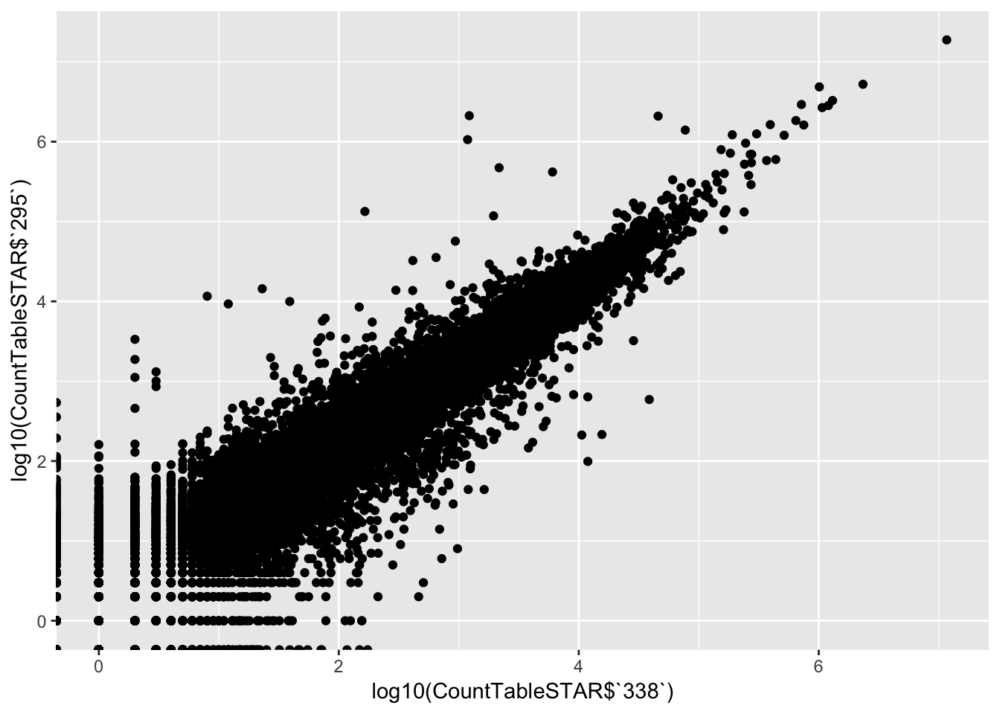
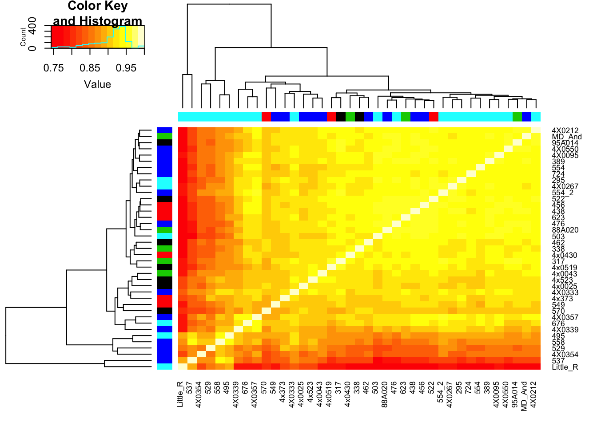

20190429_RNASeqSTAR_quantifications
Ben Fair
4/29/2019
Last updated: 2019-04-30
Checks: 5 1
Knit directory: Comparative_eQTL/analysis/
This reproducible R Markdown analysis was created with workflowr (version 1.2.0). The Report tab describes the reproducibility checks that were applied when the results were created. The Past versions tab lists the development history.
The R Markdown is untracked by Git. To know which version of the R Markdown file created these results, you’ll want to first commit it to the Git repo. If you’re still working on the analysis, you can ignore this warning. When you’re finished, you can run wflow_publish to commit the R Markdown file and build the HTML.
Great job! The global environment was empty. Objects defined in the global environment can affect the analysis in your R Markdown file in unknown ways. For reproduciblity it’s best to always run the code in an empty environment.
The command set.seed(20190319) was run prior to running the code in the R Markdown file. Setting a seed ensures that any results that rely on randomness, e.g. subsampling or permutations, are reproducible.
Great job! Recording the operating system, R version, and package versions is critical for reproducibility.
Nice! There were no cached chunks for this analysis, so you can be confident that you successfully produced the results during this run.
Great! You are using Git for version control. Tracking code development and connecting the code version to the results is critical for reproducibility. The version displayed above was the version of the Git repository at the time these results were generated.
Note that you need to be careful to ensure that all relevant files for the analysis have been committed to Git prior to generating the results (you can use wflow_publish or wflow_git_commit). workflowr only checks the R Markdown file, but you know if there are other scripts or data files that it depends on. Below is the status of the Git repository when the results were generated:
Ignored files:
Ignored: .DS_Store
Ignored: .Rhistory
Ignored: .Rproj.user/
Untracked files:
Untracked: analysis/20190428_Check_eQTLs.Rmd
Untracked: analysis/20190429_RNASeqSTAR_quantifications.Rmd
Untracked: data/PastAnalysesDataToKeep/20190428_log10TPM.txt.gz
Untracked: docs/figure/20190429_RNASeqSTAR_quantifications.Rmd/
Unstaged changes:
Modified: analysis/20190424_Check_eQTLs.Rmd
Modified: analysis/20190426_CheckRNASeqPCs_2.Rmd
Note that any generated files, e.g. HTML, png, CSS, etc., are not included in this status report because it is ok for generated content to have uncommitted changes.
There are no past versions. Publish this analysis with wflow_publish() to start tracking its development.
library(corrplot)
library(ggfortify)
library(readxl)
library(tidyverse)
library(psych)
library(ggrepel)
library(knitr)
library(reshape2)
library(gplots)
library(matrixStats)All my previous analyses (for example, here) were based on RNA-seq quantifications using the kallisto mapper/quantifier. I have noticed at low expression levels especially, there is a tendency for large variation due to a single outlier sample. I was wondering if this is a result of the kallisto softare quantification. So I remapped all the RNA-seq data with STAR aligner and here I will compare, looking specifically for outliers.
# Read in count table from kallisto pseudoalignment/quantification (not raw counts but transformed to log10 TPM)
CountTableKallisto <- read.table(gzfile('../data/PastAnalysesDataToKeep/20190428_log10TPM.txt.gz'), header=T, check.names=FALSE, row.names = 1)
kable(CountTableKallisto[1:10,1:10])| 4X0095 | 4X0212 | 4X0267 | 4X0333 | 4X0339 | 4X0354 | 4X0357 | 4X0550 | 4x0025 | 4x0043 | |
|---|---|---|---|---|---|---|---|---|---|---|
| ENSPTRG00000000001 | 1.4596020 | 1.3181301 | 1.6013483 | 1.5589640 | 0.9958742 | 1.1013449 | 1.3929852 | 1.3313990 | 1.5710575 | 1.3815519 |
| ENSPTRG00000000008 | -0.2536539 | -0.2674953 | -0.1941024 | -0.4866758 | -0.4163173 | -0.0627926 | -0.2741267 | -0.5282083 | -0.3460344 | -0.5090995 |
| ENSPTRG00000000009 | -0.8039676 | -0.4686322 | -0.3055282 | 0.3860386 | -0.8515362 | 0.1042439 | -0.4463220 | -0.8970349 | -0.2935886 | 0.1075491 |
| ENSPTRG00000000021 | 0.3052374 | 0.3327716 | 0.4356453 | 0.3484334 | 0.1223994 | 0.0724815 | 0.4177689 | 0.1820321 | 0.5923589 | 0.4519767 |
| ENSPTRG00000000024 | 0.7725879 | 0.6072126 | 0.8446722 | 0.9756023 | 0.7503209 | 0.7579696 | 0.8273169 | 0.6931534 | 0.8423209 | 0.6288720 |
| ENSPTRG00000000025 | 1.6628843 | 1.4867466 | 1.7514015 | 1.8317620 | 1.4001545 | 1.2401947 | 1.4265165 | 1.5941762 | 1.7852270 | 1.4161712 |
| ENSPTRG00000000027 | 1.8975160 | 2.0161220 | 2.0565962 | 1.9009278 | 1.7502561 | 1.7986092 | 1.9070452 | 1.8866402 | 1.9338531 | 1.9349613 |
| ENSPTRG00000000028 | 1.1863312 | 0.9721661 | 1.3494147 | 1.5735690 | 1.1640958 | 1.6446699 | 1.4248013 | 0.9567557 | 1.1596902 | 1.0160601 |
| ENSPTRG00000000029 | 1.8936928 | 1.8281266 | 1.9373761 | 1.9437439 | 1.6042216 | 1.8063322 | 1.8423057 | 1.8732680 | 2.0537790 | 1.9300656 |
| ENSPTRG00000000031 | 0.3962848 | 0.1492160 | 0.1116153 | 0.7046215 | 0.4194452 | 0.6166803 | 0.5250655 | 0.2328666 | 0.4089519 | 0.4238093 |
# Read in count table from STAR alignments
CountTableSTAR <- read.table(gzfile('../data/PastAnalysesDataToKeep/20190429_STAR.CountTable.txt.gz'), header=T, check.names=FALSE, row.names = 1)
kable(CountTableSTAR[1:10,1:10])| 4X0095 | 4X0212 | 4X0267 | 4X0333 | 4X0339 | 4X0354 | 4X0357 | 4X0550 | 4x0025 | 4x0043 | |
|---|---|---|---|---|---|---|---|---|---|---|
| ENSPTRG00000047549 | 3 | 4 | 2 | 2 | 1 | 7 | 0 | 5 | 2 | 5 |
| ENSPTRG00000050965 | 8 | 6 | 5 | 20 | 6 | 8 | 9 | 7 | 0 | 1 |
| ENSPTRG00000049558 | 78 | 60 | 73 | 188 | 138 | 196 | 117 | 33 | 89 | 62 |
| ENSPTRG00000050603 | 15 | 8 | 25 | 156 | 36 | 8 | 48 | 4 | 9 | 10 |
| ENSPTRG00000043702 | 4 | 1 | 5 | 5 | 8 | 0 | 4 | 2 | 0 | 0 |
| ENSPTRG00000039445 | 9 | 159 | 48 | 8 | 73 | 165 | 58 | 47 | 6 | 2 |
| ENSPTRG00000039924 | 73 | 624 | 203 | 60 | 48 | 442 | 383 | 137 | 108 | 133 |
| ENSPTRG00000043683 | 0 | 53 | 65 | 0 | 8 | 169 | 48 | 34 | 19 | 21 |
| ENSPTRG00000049634 | 0 | 4 | 0 | 3 | 2 | 0 | 2 | 3 | 13 | 0 |
| ENSPTRG00000052382 | 106 | 108 | 217 | 157 | 139 | 161 | 186 | 109 | 96 | 78 |
# Some initial checks of STAR count table before doing any transformations
dim(CountTableSTAR)[1] 31373 39# Millions of mapped reads per sample
kable(colSums(CountTableSTAR)/1000000)| x | |
|---|---|
| 4X0095 | 58.51351 |
| 4X0212 | 66.62148 |
| 4X0267 | 76.54181 |
| 4X0333 | 63.52876 |
| 4X0339 | 62.11760 |
| 4X0354 | 44.70223 |
| 4X0357 | 61.64508 |
| 4X0550 | 76.81200 |
| 4x0025 | 51.29439 |
| 4x0043 | 53.04606 |
| 4x373 | 33.88488 |
| 4x0430 | 60.30071 |
| 4x0519 | 75.80174 |
| 4x523 | 75.84179 |
| 88A020 | 71.47104 |
| 95A014 | 52.04438 |
| 295 | 130.53992 |
| 317 | 55.09401 |
| 338 | 64.76290 |
| 389 | 83.58035 |
| 438 | 63.74932 |
| 456 | 73.25632 |
| 462 | 67.59312 |
| 476 | 132.47805 |
| 495 | 47.75442 |
| 503 | 91.08962 |
| 522 | 75.91918 |
| 529 | 60.38978 |
| 537 | 62.66962 |
| 549 | 78.97248 |
| 554 | 63.82796 |
| 554_2 | 61.53021 |
| 558 | 46.67131 |
| 570 | 47.73784 |
| 623 | 57.71382 |
| 676 | 70.19455 |
| 724 | 68.57017 |
| Little_R | 43.89281 |
| MD_And | 60.60196 |
# XY scatter of first two samples
qplot(log10(CountTableSTAR$`338`), log10(CountTableSTAR$`295`))
#Histogram of average gene expressions measured in counts.
qplot(log10(rowMeans(CountTableSTAR)))`stat_bin()` using `bins = 30`. Pick better value with `binwidth`.Warning: Removed 4416 rows containing non-finite values (stat_bin).# Cumulative plot of mean reads per gene. Added psuedo count
plot(ecdf(log10(rowMeans(CountTableSTAR) + 0.001)), xlab="log10Counts", ylab="Fraction of genes with at less than x counts on average")# Now test some filtering methods, mostly based on minimum read counts:
# 80% of samples must have at least 10 reads
Q <- rowQuantiles(as.matrix(CountTableSTAR), probs=0.2)
# Now some filtering:
GeneSetFilter1 <- names(which(Q>10))
# 100% of samples must have at least 1 read
GeneSetFilter2<-CountTableSTAR %>%
rownames_to_column('gene') %>%
filter_if(is.numeric, all_vars(.>0)) %>%
pull(gene)
# 100% of samples must have >0 TPM (quantified by kallisto)
GeneSetFilter3<-rownames(CountTableKallisto)
length(GeneSetFilter1)[1] 14059length(GeneSetFilter2)[1] 14755length(GeneSetFilter3)[1] 14824length(intersect(GeneSetFilter1, GeneSetFilter2))[1] 13967length(intersect(GeneSetFilter2, GeneSetFilter3))[1] 13574length(intersect(GeneSetFilter1, GeneSetFilter3))[1] 13119length(intersect(intersect(GeneSetFilter1, GeneSetFilter2), GeneSetFilter3))[1] 13094All of these filter methods result in highly overlapping sets of ~14000 genes. Conceptually I prefer method 1, where 80% of samples must contain at least 10 reads, thus allowing some samples to have much less or even 0. This method will require a pseudocount to deal with log-transform.
Now do some basic transformations. I will just convert to log10(CPM).
CountTableFiltered <- CountTableSTAR %>% as.data.frame() %>%
rownames_to_column('gene') %>%
filter(gene %in% GeneSetFilter1) %>%
column_to_rownames('gene')
# table of log10COM
log10CPM_table <- log10((CountTableFiltered + 1) / colSums(CountTableFiltered))
kable(log10CPM_table[1:10,1:10])| 4X0095 | 4X0212 | 4X0267 | 4X0333 | 4X0339 | 4X0354 | 4X0357 | 4X0550 | 4x0025 | 4x0043 | |
|---|---|---|---|---|---|---|---|---|---|---|
| ENSPTRG00000049558 | -5.869315 | -6.136338 | -5.912919 | -5.534486 | -5.498767 | -5.446139 | -5.763976 | -6.583932 | -5.891728 | -5.916657 |
| ENSPTRG00000039445 | -6.823099 | -5.600182 | -6.076746 | -6.967425 | -5.912919 | -5.590839 | -5.870929 | -6.059364 | -6.990760 | -7.638290 |
| ENSPTRG00000039924 | -6.014165 | -5.068788 | -5.513469 | -6.018972 | -6.076746 | -5.275264 | -5.197819 | -5.671068 | -5.604355 | -5.613500 |
| ENSPTRG00000052382 | -5.772820 | -5.792200 | -5.544940 | -5.666011 | -5.676971 | -5.594787 | -5.495101 | -5.880275 | -5.795379 | -5.913320 |
| ENSPTRG00000000008 | -6.060522 | -6.351073 | -5.982660 | -6.249843 | -6.098067 | -5.910425 | -6.059671 | -6.285788 | -6.210640 | -6.490304 |
| ENSPTRG00000044847 | -5.387366 | -5.135670 | -5.516454 | -5.843171 | -5.450021 | -4.920606 | -5.351918 | -5.488091 | -5.289073 | -5.589458 |
| ENSPTRG00000050180 | -4.152231 | -4.232544 | -3.832648 | -3.851126 | -4.283042 | -4.983622 | -4.261749 | -4.051910 | -4.254701 | -4.284085 |
| ENSPTRG00000042781 | -5.525255 | -5.455252 | -5.371320 | -5.416364 | -5.387366 | -5.858951 | -5.653037 | -5.810171 | -5.407752 | -5.761441 |
| ENSPTRG00000046221 | -5.852300 | -6.089921 | -5.851666 | -5.753029 | -5.752195 | -5.909971 | -5.636980 | -5.979525 | -5.858417 | -6.302381 |
| ENSPTRG00000051432 | -4.544259 | -4.655172 | -4.469083 | -4.402082 | -4.722227 | -4.848725 | -4.627057 | -4.828534 | -4.418602 | -4.595351 |
Now make correlation matrix from STAR quantifications
# Read in metadata
Metadata <- as.data.frame(read_excel("../data/Metadata.xlsx"))
kable(head(Metadata))| Individual.ID | Source | Individual.Name | Yerkes.ID | Label | Notes | FileID.(Library_Species_CellType_FlowCell) | SX | RNA.Library.prep.batch | RNA.Sequencing.Lane | Sequencing.Barcode | RNA.Extract_date | DNASeq_FastqIdentifier | DNA.library.prep.batch | DNA.Sequencing.Lane | DNA.Sequencin.Barcode | DNA.Extract_date | Age | X__1 | Post.mortem.time.interval | RIN | Viral.status | RNA.total.reads.mapped.to.genome | RNA.total.reads.mapping.to.ortho.exons | Subspecies | DOB | DOD | DOB Estimated | Age (DOD-DOB) | OldLibInfo. RIN,RNA-extractdate,RNAbatch |
|---|---|---|---|---|---|---|---|---|---|---|---|---|---|---|---|---|---|---|---|---|---|---|---|---|---|---|---|---|---|
| 295 | Yerkes | Duncan | 295 | 295 | NA | 24_CM_3_L006.bam | M | 5 | 6 | 18 | 2018-10-10 | YG3 | 1 | 1 | NA | 2018-09-01 | 40 | NA | 0.5 | 7.3 | NA | 45.67002 | 17.51562 | verus/ellioti | 24731 | 39386 | NA | 40 | 6.3,6/14/2016,2 |
| 317 | Yerkes | Iyk | 317 | 317 | NA | 11_CM_3_L004.bam | M | 3 | 4 | 4 | 2016-06-07 | YG2 | 1 | 1 | NA | 2018-09-01 | 44 | NA | 2.5 | 7.6 | NA | 42.75617 | 17.18811 | verus | 22859 | 38832 | NA | 43 | NA |
| 338 | Yerkes | Maxine | 338 | 338 | NA | 8_CF_3_L008.bam | F | 3 | 8 | 6 | 2016-06-07 | YG1 | 1 | 1 | NA | 2018-09-01 | 53 | NA | NA | 7.2 | NA | 50.52632 | 19.49295 | verus | 20821 | 40179 | Yes | 53 | NA |
| 389 | Yerkes | Rogger | 389 | 389 | NA | NA | M | 4 | NA | 23 | 2018-10-10 | YG39 | 2 | 2 | NA | 2018-10-01 | 45 | NA | NA | 5.7 | NA | NA | NA | verus | 25204 | 41656 | NA | 45 | NA |
| 438 | Yerkes | Cheeta | 438 | 438 | NA | 155_CF_3_L004.bam | F | 2 | 4 | 8 | 2016-06-22 | YG22 | 1 | 1 | NA | 2018-09-01 | 55 | NA | NA | 5.6 | NA | 55.30614 | 18.06375 | verus | 20821 | 40909 | Yes | 55 | NA |
| 456 | Yerkes | Mai | 456 | 456 | NA | 156_CF_3_L001.bam | F | 2 | 1 | 15 | 2016-06-22 | YG23 | 1 | 1 | NA | 2018-09-01 | 49 | NA | NA | 5.5 | NA | 54.00665 | 20.13760 | verus | 23377 | 41275 | Yes | 49 | NA |
CorMatrix <- log10CPM_table %>%
cor(method = c("spearman"))
RNAExtractionDate <- as.character(unclass(factor(plyr::mapvalues(row.names(CorMatrix), from=Metadata$Individual.ID, to=Metadata$RNA.Extract_date))))
RNA.Library.prep.batch <- as.character(unclass(factor(plyr::mapvalues(row.names(CorMatrix), from=Metadata$Individual.ID, to=Metadata$RNA.Library.prep.batch))))
# Heatmap of correlation. Row colors for RNA extraction batch, column colors for RNA library prep batch
heatmap.2(CorMatrix, trace="none", ColSideColors=RNAExtractionDate, RowSideColors = RNA.Library.prep.batch)
# A couple of pairwise comparisons
qplot(log10CPM_table$`4X0095`, log10CPM_table$`4X0212`)qplot(log10CPM_table$`295`, log10CPM_table$Little_R)Now make the same plots from the kallisto quantifications
CorMatrix <- CountTableKallisto %>%
cor(method = c("spearman"))
RNAExtractionDate <- as.character(unclass(factor(plyr::mapvalues(row.names(CorMatrix), from=Metadata$Individual.ID, to=Metadata$RNA.Extract_date))))
RNA.Library.prep.batch <- as.character(unclass(factor(plyr::mapvalues(row.names(CorMatrix), from=Metadata$Individual.ID, to=Metadata$RNA.Library.prep.batch))))
# Heatmap of correlation. Row colors for RNA extraction batch, column colors for RNA library prep batch
heatmap.2(CorMatrix, trace="none", ColSideColors=RNAExtractionDate, RowSideColors = RNA.Library.prep.batch)
qplot(CountTableKallisto$`4X0095`, CountTableKallisto$`4X0212`)qplot(CountTableKallisto$`295`, CountTableKallisto$Little_R)
sessionInfo()R version 3.5.1 (2018-07-02)
Platform: x86_64-apple-darwin15.6.0 (64-bit)
Running under: macOS 10.14
Matrix products: default
BLAS: /Library/Frameworks/R.framework/Versions/3.5/Resources/lib/libRblas.0.dylib
LAPACK: /Library/Frameworks/R.framework/Versions/3.5/Resources/lib/libRlapack.dylib
locale:
[1] en_US.UTF-8/en_US.UTF-8/en_US.UTF-8/C/en_US.UTF-8/en_US.UTF-8
attached base packages:
[1] stats graphics grDevices utils datasets methods base
other attached packages:
[1] matrixStats_0.54.0 gplots_3.0.1 reshape2_1.4.3
[4] knitr_1.22 ggrepel_0.8.0 psych_1.8.10
[7] forcats_0.4.0 stringr_1.4.0 dplyr_0.8.0.1
[10] purrr_0.3.2 readr_1.3.1 tidyr_0.8.2
[13] tibble_2.1.1 tidyverse_1.2.1 readxl_1.1.0
[16] ggfortify_0.4.5 ggplot2_3.1.0 corrplot_0.84
loaded via a namespace (and not attached):
[1] Rcpp_1.0.1 lubridate_1.7.4 lattice_0.20-38
[4] gtools_3.8.1 assertthat_0.2.1 rprojroot_1.3-2
[7] digest_0.6.18 R6_2.4.0 cellranger_1.1.0
[10] plyr_1.8.4 backports_1.1.3 evaluate_0.13
[13] highr_0.8 httr_1.4.0 pillar_1.3.1
[16] rlang_0.3.3 lazyeval_0.2.2 rstudioapi_0.10
[19] gdata_2.18.0 rmarkdown_1.11 labeling_0.3
[22] foreign_0.8-71 munsell_0.5.0 broom_0.5.1
[25] compiler_3.5.1 modelr_0.1.4 xfun_0.6
[28] pkgconfig_2.0.2 mnormt_1.5-5 htmltools_0.3.6
[31] tidyselect_0.2.5 gridExtra_2.3 workflowr_1.2.0
[34] crayon_1.3.4 withr_2.1.2 bitops_1.0-6
[37] grid_3.5.1 nlme_3.1-137 jsonlite_1.6
[40] gtable_0.3.0 git2r_0.24.0 magrittr_1.5
[43] scales_1.0.0 KernSmooth_2.23-15 cli_1.1.0
[46] stringi_1.4.3 fs_1.2.6 xml2_1.2.0
[49] generics_0.0.2 tools_3.5.1 glue_1.3.1
[52] hms_0.4.2 parallel_3.5.1 yaml_2.2.0
[55] colorspace_1.4-1 caTools_1.17.1.1 rvest_0.3.2
[58] haven_2.1.0